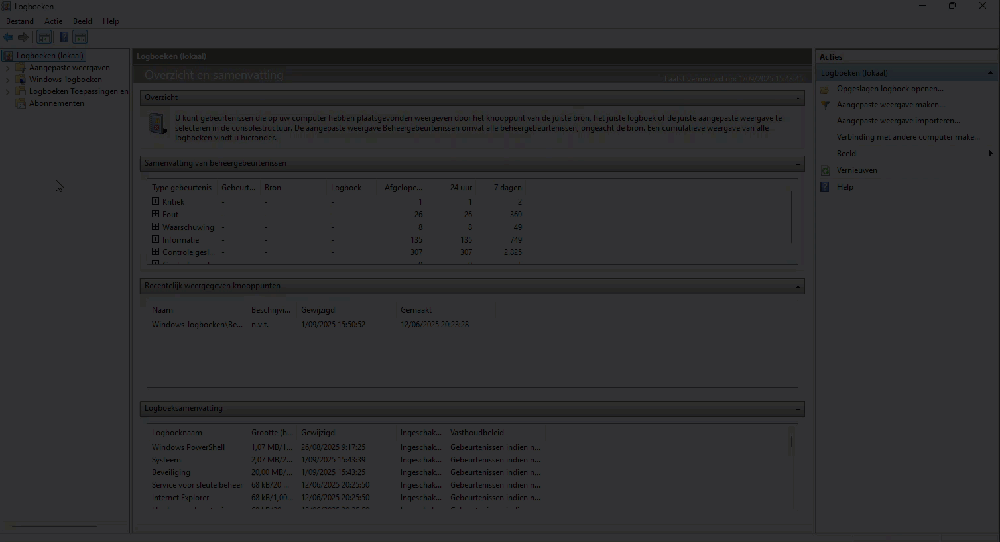

Event Viewer
Veel activiteiten op een Windows-systeem worden gelogd. Je kan deze logboeken gebruiken om problemen op te lossen of om informatie te verzamelen over het gebruik en de activiteit van het systeem. De Windows Event Viewer is opgedeeld in twee hoofdcategorieën:
- Windows Logs: bevatten algemene logboeken over het Windows-systeem en zijn verder opgedeeld in vijf subcategorieën:
- Application
- Security
- Setup
- System
- Forwarded Events
- Applications and Services Logs: bevatten gedetailleerde registraties van gebeurtenissen en activiteiten met betrekking tot specifieke Windows-componenten en systeemfuncties.
Event ID
Om efficiënt informatie in de logboeken op te zoeken, moet je eerst weten welk logboek je moet raadplegen. Daarnaast wordt elk type gebeurtenis geïdentificeerd door een uniek ID. Hier zijn enkele voorbeelden:
| ID | Gebeurtenis | Logboekcategorie |
|---|---|---|
| 4624 | Succesvolle aanmelding van een gebruiker | Security |
| 4647 | Afmelding van een gebruiker | Security |
| 4625 | Mislukte aanmeldpoging | Security |
| 12 | Opstarten van het systeem | System |
| 6006 | Afsluiten van het systeem | System |
| 41 | Onjuist afsluiten van het systeem | System |
| 104 | Systeemlogboeken gewist | System |
| 1102 | Beveiligingslogboeken gewist | Security |
| 10000 | Netwerkverbinding tot stand gebracht | Applications and Services Logs > Microsoft > Windows > NetworkProfile |
| 41 | Windows-update gedownload | Applications and Services Logs > Microsoft > Windows > WindowsUpdateClient |
Voorbeeld: mislukte aanmeldpoging
Zo filter je in de Windows Event Viewer op mislukte aanmeldpogingen:
- Open de Windows Event Viewer en ga naar Windows Logs.
- Selecteer het logboek Security.
- Klik in het menu rechts op Filter Current Log.
- Geef Event ID 4625 in het filterveld in en klik op OK.
- Kies een gebeurtenis uit de gefilterde resultaten om de details te bekijken.
